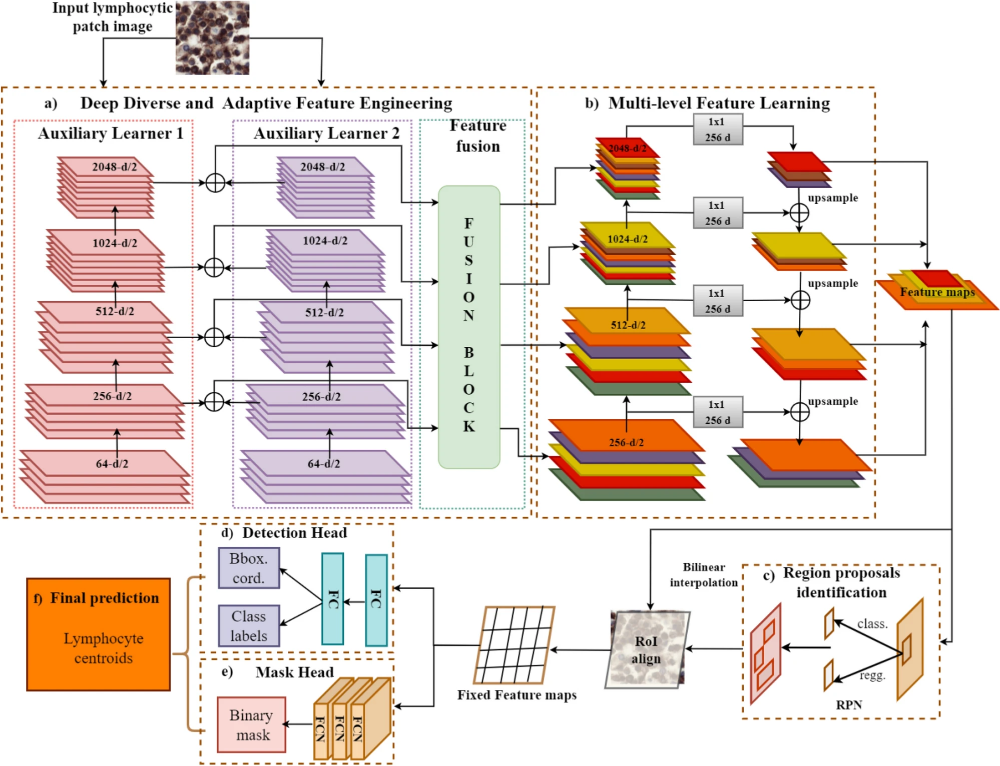
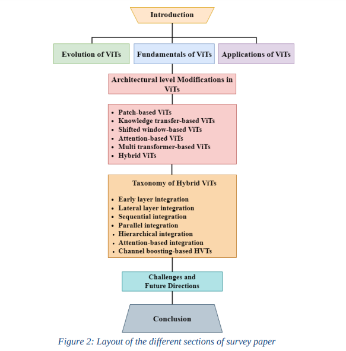
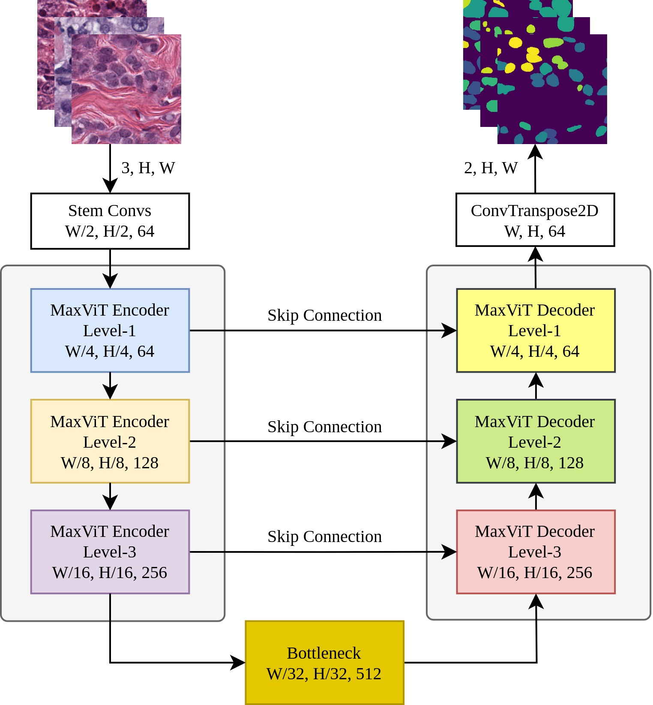
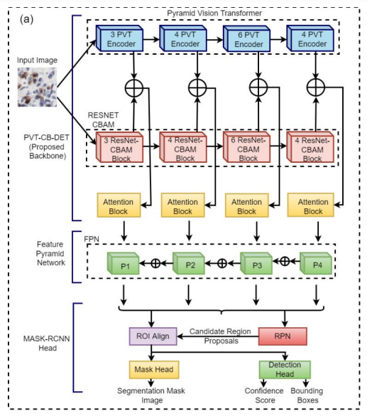
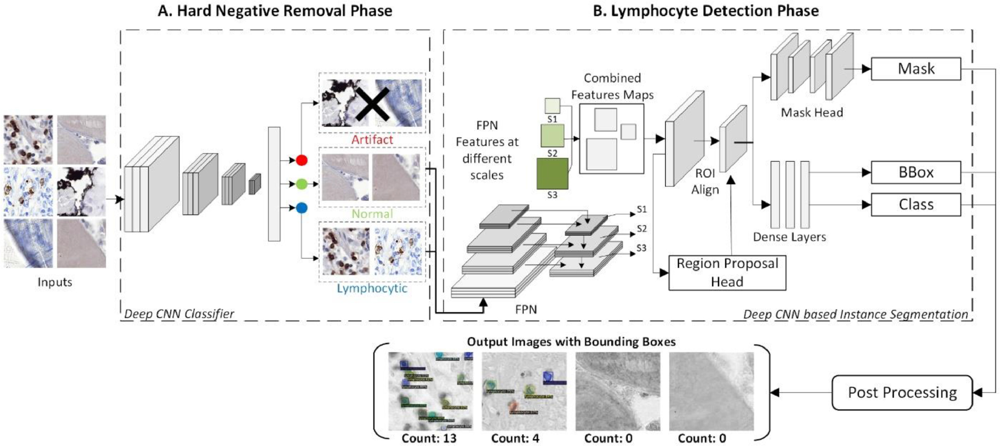
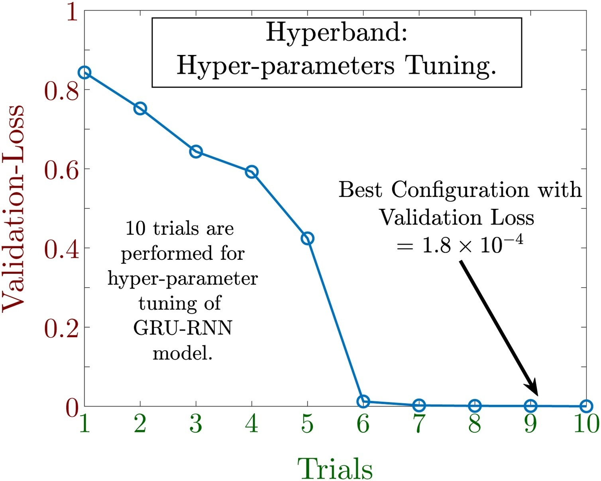
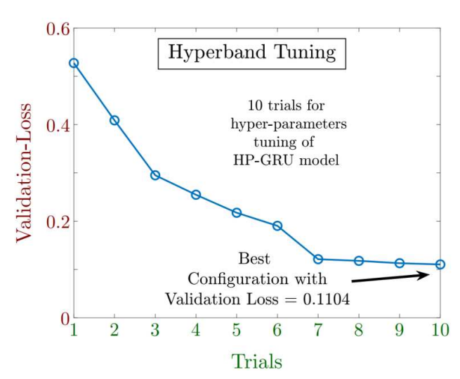

|
Abdul Rehman Khan
I am a Machine Learning and Deep Learning enthusiast with research interest in Computer Vision, Natural Language Processong and Generative Networks.
I have +3 years of research experience in Medical Image Analysis Using Deep Learning and +6 years of experience with Python programming.
Currently I am pursing MS in Computer Science from Pakistan Institute of Engineering and Applied Sciences (PIEAS), Pakistan, expected graduation in Oct 2023.
I am working on thesis titled Development of an Automated Cancer Detection System using Histology images and Deep Neural Networks under the supervision of Prof. Asifullah Khan.
I completed my BS in Computer and Information Sciences with Gold Medal from PIEAS in 2021. During my BS, I worked on thesis titled Exploitation of Mask-RCNN for the detection of Lymphocytes in Histopathological images under the supervision of Prof. Asifullah Khan.
Email /
CV /
LinkedIn /
Google Scholar /
Github /
ResearchGate
|
|
|
Research
My focus lies in exploring the practical implementations of computer vision, natural language processing, and generative models.
Over the past 3-4 years, I have actively engaged in research within these domains, and my findings have been published in reputable journals and presented at conferences.
I possess strong proficiency in Python programming, with specific expertise in PyTorch, Keras, TensorFlow, and Scikit-Learn.
Additionally, I have gained practical experience through freelance projects over the past 3 years.
I am enthusiastic about furthering my research in these fields and utilizing my skills to contribute positively to society.
|
|

|
Lymphocyte detection for cancer analysis using a novel fusion block based channel boosted CNN
Zunaira Rauf,
Abdul Rehman Khan,
Anabia Sohail,
Hani Alquhayz,
Jeonghwan Gwak,
Asifullah Khan*,
Scientific Reports, 2023/08/28
Paper Link
In this work, we propose a novel Boosted Channels Fusion-based CNN “BCF-Lym-Detector” for lymphocyte detection in multiple cancer histology images. The proposed network initially selects candidate lymphocytic regions at the tissue level and then detects lymphocytes at the cellular level. The proposed “BCF-Lym-Detector” generates diverse boosted channels by utilizing the feature learning capability of different CNN architectures. In this connection, a new adaptive fusion block is developed to combine and select the most relevant lymphocyte-specific features from the generated enriched feature space. Multi-level feature learning is used to retain lymphocytic spatial information and detect lymphocytes with variable appearances.
|
|

|
A survey of the Vision Transformers and its CNN-Transformer based Variants
Asifullah Khan*,
Zunaira Rauf,
Anabia Sohail,
Abdul Rehman Khan,
Hifsa Asif,
Aqsa Asif,
Umair Farooq
Artificial Intelligence Review, 2023/10/04
Paper Link
This survey presents a taxonomy of recent vision transformer architectures, with a focus on hybrid architectures. It also discusses the key features of these architectures, such as attention mechanisms, positional embeddings, multi-scale processing, and convolution. The survey concludes by highlighting the potential of hybrid vision transformers and pointing towards future directions in this rapidly evolving field.
|
|

|
MaxViT-UNet: Multi-Axis Attention for Medical Image Segmentation
Abdul Rehman Khan,
Asifullah Khan*
arXiv preprint arXiv:2305.08396, 2023/05/15
Paper Link /
Code Link
The proposed MaxViT-UNet architecture consists of an encoder-decoder network with a hybrid decoder block. The decoder block is designed to harness the power of both convolution and self-attention mechanisms. The convolution mechanism is used to extract local features, while the self-attention mechanism is used to capture both local and global features. The two mechanisms are combined using a multi-axis attention mechanism, which significantly enhances the discriminative capacity between the object and background regions.
|
|

|
Channel boosting based detection and segmentation for cancer analysis in histopathological images
Momina Liaqat Ali,
Zunaira Rauf,
Abdul Rehman Khan,
Asifullah Khan*
2022 19th International Bhurban Conference on Applied Sciences and Technology (IBCAST), 2022/12/30
Paper Link
Pyramid Vision Transformer Channel Boosted Lymphocyte Detection (PVTCB-Lymph-Det) is a new computer-aided diagnostic system for detecting lymphocytes in tumor stroma. It is based on a deep CNN architecture that uses the idea of channel boosting to enhance the learning capacity of the model. The proposed system was evaluated on a dataset of H&E stained images and achieved an F-score of 88.92%. This suggests that PVTCB-Lymph-Det can be used to effectively detect lymphocytes and may aid pathologists in solving medical diagnostic problems.
|
|

|
Detection of Tumour Infiltrating Lymphocytes in CD3 and CD8 Stained Histopathological Images using a Two-Phase Deep CNN
Muhammad Mohsin Zafar,
Zunaira Rauf,
Anabia Sohail,
Muhammad Obaidullah,
Abdul Rehman Khan,
Saddam Hussain Khan,
Yeon Soo Lee,
Asifullah Khan*
Photodiagnosis and Photodynamic Therapy, 2021/12/06
Paper Link
This study presents a novel pipeline, named "Two-Phase Deep Convolutional Neural Network based Lymphocyte Counter (TDC-LC)," designed to address challenges in automating the counting of Tumour-Infiltrating Lymphocytes (TILs) in CD3 and CD8 stained histology images. The pipeline consists of two phases: the first phase utilizes a custom CNN called "LSATM-Net" to remove hard negative examples (artifacts) using a split, asymmetric transform, and merge approach, while the second phase performs instance segmentation to detect and generate a lymphocyte count. The proposed TDC-LC pipeline exhibits good generalization across different organs.
|
|

|
Optimally configured gated recurrent unit using hyperband for the long-term forecasting of photovoltaic plant
Ameer Tamoor Khan,
Abdul Rehman Khan,
Shuai Li*,
Sunila Bakhsh,
Aamir Mehmood,
Jahan Zaib
Renewable Energy Focus, 2021/12/01
Paper Link
This paper presents a new model for forecasting the power generation of photovoltaic plants. The model is based on a gated recurrent unit (GRU) neural network and uses a technique called Hyperband to optimize the hyperparameters of the model. The model is evaluated on 11 months of data and achieves promising results with minimum error.
|
|

|
An Optimally Configured HP-GRU Model Using Hyperband for the Control of Wall Following Robot
Abdul Rehman Khan,
Ameer Tamoor Khan*,
Masood Salik,
Sunila Bakhsh,
International Journal of Robotics and Control Systems, 2021/03/01
Paper Link
This paper presents an autonomous control framework for a wall-following robot using an optimally configured Gated Recurrent Unit (GRU) model with the Hyperband algorithm. GRU is a type of recurrent neural network that is well-suited for time-series data, and it overcomes the vanishing gradient problem that can occur with other RNNs. The Hyperband algorithm is a Bayesian optimization technique that can be used to find the optimal hyperparameters for a machine learning model.
|
|
{kind=link}